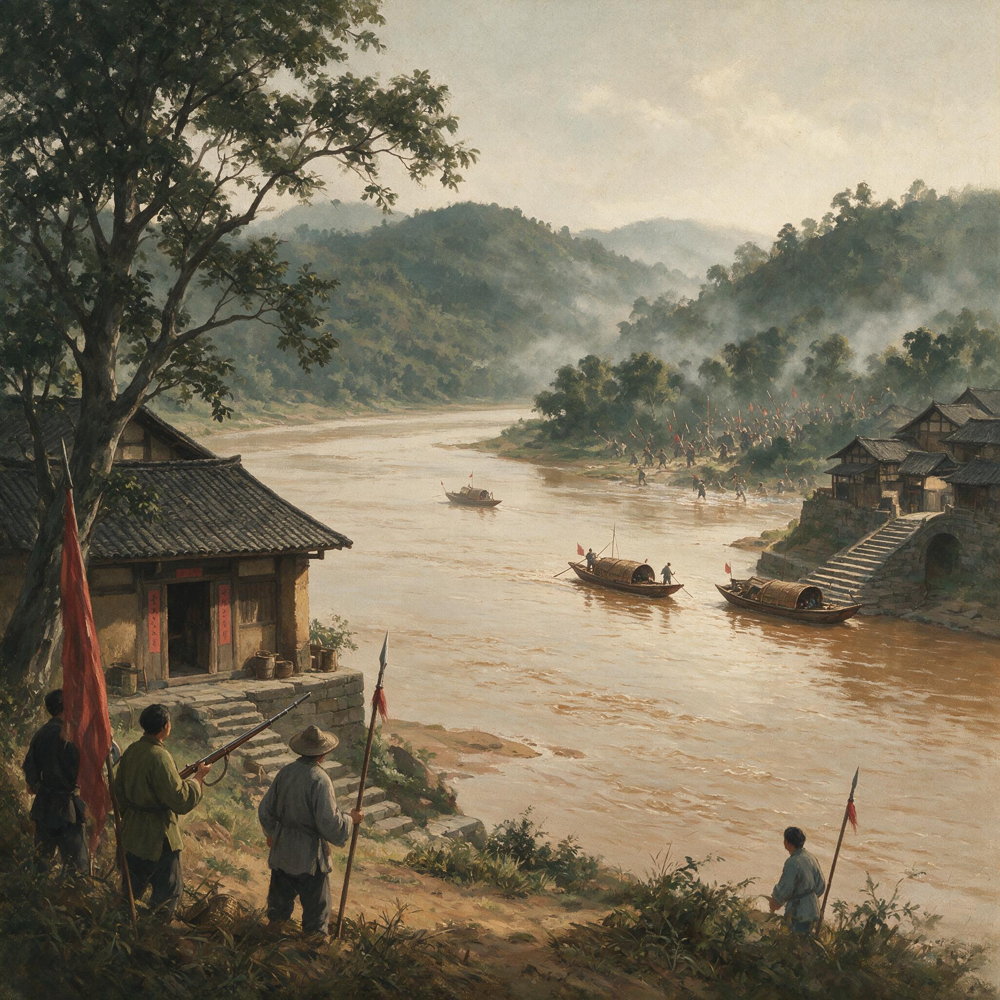

第 13 章
同志军围城：新津攻防战
岷江在九月间已经开始变浑了。上游山里的雨水裹着红土冲下来，把江水染成浑浊的赭黄色。站在新津城东门外渡口往对岸看，宝资山上的树丛间隐约有人影晃动。

新津岷江渡口同志军鸟铳武装渡河
AI 生成插图，非史实影像。
那些人影不是砍柴的——他们扛着的长杆子在午后的阳光下偶尔闪出铁器的反光，那是鸟铳的枪管。
渡口的船已经三天没开了。船老大把船拴在岸边石桩上，人躲在岸边的茶棚里喝茶。茶棚的竹帘半卷着，从里面能看见江面，从外面看不清里面。
九月十四这天下午，茶棚里坐了七八个人，都不是来喝茶的。一个穿蓝布短衫的年轻人蹲在竹帘边上，眼睛一直盯着对岸，面前桌上那碗茶从热放到凉，一口没动。茶棚老板也不催他——老板自己也在看江面。
“动了。”年轻人忽然说。茶棚里所有人都站起来。对岸宝资山脚下，一队人正沿着山路往下走，走得很快，不像正规军那样列队，但也不是乱跑。每个人肩上扛着家伙——有的是鸟铳，有的是梭镖，还有两个人抬着一根碗口粗的竹竿，竹竿前端绑着一个鼓鼓囊囊的布包。“竹竿炸药。”茶棚里有人低声说了一句。
这是1911年9月14日。成都血案已经过去七天，蒲殿俊、罗纶等九人仍被关在督署里，赵尔丰的电报房日夜不停地往北京发报，但北京的回电越来越短。而此刻，在新津城外岷江两岸，另一场风暴正在聚拢。
新津这个地方，在四川的交通版图上是个咽喉。岷江从灌县流下来，经过成都西边，到新津时汇合了西河、南河两条支流，水势陡然变宽。从成都往南走，去眉山、嘉定、叙府，必须过新津渡；从川南往成都运盐、运茶、运布匹，也必须过新津渡。谁控制了新津，谁就掐住了成都平原通往川南的水陆要道。
赵尔丰当然知道这一点。九月八日，血案第二天，他就给新津知县发了急电，命令加强城防。
但电报发出后第三天，新津的回复断了——不是电报线被剪断，线还在，是没人回。新津知县跑了。
这个消息传到成都督署时，赵尔丰正在批阅巡防营的调防文书。据幕僚事后回忆，他放下笔，盯着电报房的呈文看了很久。
但赵尔丰手里已经没有多余的兵了：成都城内的巡防营要守督署、守城门、守军械库；驻在凤凰山的新军第十七镇一部分已调往湖北，剩下的兵力既要弹压城内随时可能复起的罢市，又要防备城外的同志军。
九月十日以后，成都东、南、西三面陆续出现武装队伍——华阳的秦载赓、温江的吴庆熙、双流的向迪璋——这些人马多则上千，少则数百，虽然还不敢直接攻城，但已经把成都围成了一个孤岛。赵尔丰只能等：等朝廷从湖北调来的新军，等端方带着援兵入川。但新津不等他。
九月十一日，新津城内的袍哥大爷侯宝斋在城隍庙开了香堂。侯宝斋这个名字，新津人叫了二十年。他本名侯国治，宝斋是袍哥里的字号。年轻时在岷江上撑船，后来开了个米行，再后来米行变成码头上的货栈，货栈又变成新津最大的茶馆。
茶馆叫“临江楼”，就在东门外渡口边上：一楼喝茶，二楼赌牌九，三楼是侯宝斋的账房。账房里有一本厚厚的册子，记的不是茶馆的流水——那是明账。暗账在侯宝斋脑子里：新津到眉山沿江三十里，哪个码头有多少兄弟，哪个场镇有多少条枪，谁欠过他的人情，谁跟他有仇。
袍哥的组织不是军队——没有番号，没有军衔，没有花名册。但侯宝斋一声令下，能在三天之内把沿江三十里的船全部调走。不是征用，是传话：从一个茶馆传到另一个茶馆，从一个码头传到另一个码头，传话的人不需要解释原因。
九月十一日的香堂，来的不止是新津本地的袍哥，邛崃、蒲江、大邑、崇庆都有人来。城隍庙的大殿里站不下，人一直排到庙门外。侯宝斋站在大殿中央的香案前，面前摆着三牲祭品和一碗鸡血酒。
据在场的人后来回忆，侯宝斋的话很少。他说成都的事情大家都晓得了——赵尔丰杀了请愿的人，抓了蒲先生、罗先生；新津是南路的门，这道门不能开。然后他端起鸡血酒，一口喝干。大殿内外几百号人同时端起碗，喝酒的声音在城隍庙的院子里回荡，像一阵闷雷。
同一天晚上，新津城南二十里的观音堂也开了一次会。召集人叫周鸿勋。周鸿勋跟侯宝斋不是一路人——侯宝斋是袍哥，周鸿勋是巡防营的哨官，正儿八经的清军军官。他带的哨驻在邛崃，手下有一百多号人，装备的是德国造毛瑟步枪。这种枪在四川不多见：四川的新军和巡防营大部分还在用汉阳造或者更老的单发毛瑟，射程和精度都差一截；周鸿勋这一哨人配的是九子毛瑟——弹仓装弹五发，射程能达到六百步。
九月七日成都血案的消息传到邛崃时，周鸿勋正在营房里检查枪械。他听完消息，把枪机推回去，对身边的兵说了一句话：这官不当了。
九月九日，周鸿勋带着他那一哨人离开了邛崃驻地——不是逃跑，是起义。他把哨里的军装、旗帜、文书全部烧掉，换上了便衣，但枪没丢。一百多条毛瑟步枪，每杆配了六十发子弹——这个弹药基数在当时的四川巡防营里算高的，赵尔丰为了节省军费，大部分巡防营每枪只配三十发子弹。
周鸿勋带着这支队伍往新津走，一路上不断有人加入——团练、袍哥、溃散的巡防兵、被租股抽走了最后一亩田的农户。走到观音堂时，队伍已经膨胀到两千多人，但枪只有原来那一百多条，大部分人手里拿的是鸟铳、梭镖、砍刀，还有农具——锄头、铁锹、扁担。
观音堂是个小庙，供的是观音菩萨。庙门前有一棵大黄桷树，树冠遮出半亩地的阴凉。周鸿勋就在树下开了会。
他不是袍哥，不会摆香堂，用的是军队的办法——把人分成队，每队指定一个头目，头目负责管好自己的人。然后他摊开一张手绘的地图。地图是从邛崃县衙里带出来的，上面标着新津周围的地形：渡口、浅滩、山路、桥梁。周鸿勋指着地图上新津城的位置，手指沿着岷江往上游移了三寸，停在宝资山的位置：他们守这里。
宝资山在新津城东南，临江而立。山不高，但地势陡峭，从山顶能俯瞰整个新津渡口和上下游数里的江面；山背后是连绵的丘陵，通往彭山、眉山方向。守住了宝资山，就守住了新津的南大门。周鸿勋选这个地方是有道理的——他不是本地人，但他手下的兵里有好几个是新津本地人，对地形熟得很。
他们告诉周鸿勋，宝资山下沿江有三处浅滩，枯水季节可以涉渡。其中最浅的一处在山脚西侧，叫“回水沱”，江水在这里绕了个弯，流速放缓，河床是硬沙底。九月正是水位下降的时候，回水沱的水深不到三尺。周鸿勋判断赵尔丰的兵要来，一定从这里过。他判断得很准。
赵尔丰派来打新津的部队是九月十二日从成都出发的。统兵官叫朱庆澜，是第十七镇的协统，手下有两个标的兵力——大约三千人。装备是清军标准配置：步兵配汉阳造七九步枪，每标配四挺马克沁重机枪，还有一个炮队带了六门克虏伯山炮。三千人对付一群民变武装，按理说是碾压式的优势。
但朱庆澜走到半路就发现不对了。他从成都南门出发，沿官道往新津走。第一天走了四十里，路上遇到三个被烧毁的驿站：马匹被牵走了，粮草被搬空了，驿卒跑光了。没有马匹替换，辎重队的速度就慢下来——炮车需要六匹马牵引，驿站没有备用马匹，炮队的骡马走了四十里就开始掉膘。
第二天更糟：官道沿途的场镇全部罢市，店铺关门，饭馆歇业，连卖水的摊子都收了。三千人的队伍找不到地方买粮食。朱庆澜派人去找当地的保正、甲长，但这些人要么躲了，要么摊手说没办法——粮仓的钥匙在县衙，县太爷跑了。朱庆澜只能从成都带出来的军粮里支应，但三千人一天要吃掉上万斤粮食，辎重队的骡马驮运能力有限，带出来的粮草只够五天。
九月十四日傍晚，朱庆澜的前锋抵达了新津北面的花桥场。从这里到新津城还有十五里，但前锋部队刚扎下营盘就遭到了袭击。
袭击是从一片竹林里发起的：天色已经擦黑，清军正在搭帐篷，忽然竹林里飞出一排枪弹——不是步枪的齐射，枪声杂乱，有鸟铳的闷响，有抬枪的轰响，还有几杆毛瑟的脆响。子弹打得不准，大部分从帐篷顶上飞过去了，但有一发打中了一个正在卸驮子的马夫，打穿了小腿。清军立刻展开战斗队形向竹林还击，两挺马克沁机枪架起来对着竹林扫射了一刻钟。竹林里安静了。但等清军冲进竹林搜查时，里面一个人都没有——地上只留下几十个脚印和一些火药渣，脚印往竹林深处延伸，消失在一条田埂小路上。
这是朱庆澜第一次领教同志军的打法。他在当天的日记里写下了自己的观察：贼伏不出，每渡辄为所乘。
朱庆澜是一个习惯记日记的军官，每天行军宿营后会在灯下写几行字。这本日记在战后流散到民间，几经辗转后被四川省图书馆收藏。九月十五日的日记更长一些。
朱庆澜记录了前一夜在花桥场遇袭的情况：前锋遇袭后毙贼无算但获尸仅一具——贼遁入竹林小径后路径曲折不可追；询问当地土人得知此间沟渠田塍密如蛛网非本地人不能识路；贼皆土著来去如风而清军人地两生夜间不敢深入。
十五日晨拔营南行后情况更棘手：沿途桥梁多被拆毁；贼不与正面交锋专以冷枪扰其行军——每遇竹林桑田坟地辄有枪声起而清军展开还击则贼已遁去；一日之间如此者五六次士卒疲于奔命而一无所获。
午时抵达新津北门外五里之旧县坝后探马报称贼据宝资山沿江布防自回水沱至龙王渡十余里皆有壁垒贼数不下万人；而清军兵力仅三千且粮道时断时续此战恐非旦夕可下。
朱庆澜的困境不是他一个人的困境。这是晚清国家机器在面对地方社会全面动员时必然出现的困境。
清军的优势在于装备和训练：汉阳造步枪射程可达八百步，精度在一百步内可以打中人形靶；马克沁机枪每分钟射速四百发，足以封锁一个渡口；克虏伯山炮可以轰击三千米外的目标。但所有这些优势都建立在一个前提上：敌人会按照正规战的方式跟你打。
同志军不这么打。他们没有统一的指挥系统——侯宝斋和周鸿勋之间靠传话联系，传话的人从新津城跑到宝资山要一个时辰。他们没有后勤补给线——粮食由沿江各场镇摊派供应，今天这个场送米，明天那个场送肉。他们没有阵地防御的概念——工事是用竹竿、门板、沙袋临时搭的，白天守江边，晚上撤到山上。
但他们有一样清军没有的东西：对地形的绝对熟悉。宝资山到回水沱之间有一条小路，宽不过三尺，两边是密不透风的竹林。这条路在地图上没有标记——它是当地农户走了几十年的田埂路，外人根本不知道它的存在。同志军利用这条小路在江边阵地和后方营地之间来回调动兵力，清军的炮火打不到这条路上——它被山体挡住了。
九月十六日，朱庆澜发起第一次渡江进攻。他选择了回水沱作为突破口——这个选择本身没错，回水沱水浅流缓，河床坚硬，适合步兵涉渡。朱庆澜的计划是先以炮火轰击对岸阵地，然后步兵在机枪掩护下涉水过江。
凌晨五时，六门克虏伯山炮开始轰击宝资山，炮弹落在山坡上炸起一团团泥土和碎石。炮击持续了半个时辰。炮声停后，对岸一片沉寂。
朱庆澜命令第一标第一营涉渡。三百名士兵脱掉绑腿和靴子，把步枪举过头顶，踏入江水中。九月岷江的水温已经偏凉了，士兵们一下水就冻得打颤，但他们还是按照操典规定的队形——每排间隔五步，三排并进——向对岸推进。
走到江心时水深及腰，水流比预想的急——朱庆澜的侦察兵低估了流速。几个士兵站立不稳被冲倒了，后面的赶紧伸手去拉，队形开始散乱。就在这时对岸开火了——不是步枪齐射，是上百杆鸟铳和抬枪的同时发射。鸟铳打的是铁砂和碎铁片，一枪打出来是一个扇面；抬枪更厉害——这种枪管长六尺、需要两个人操作的老式火器装填的是火药和铅弹的混合物，打出去像一门小炮。
清军士兵在江心无处可躲。铁砂和铅弹打在江面上激起一片水花，打在人体上就是一片血雾。第一排的士兵几乎全部中弹：有的人直接栽进水里被冲走；有的人挣扎着往回跑；有的人站在江心端着步枪还击——但汉阳造的子弹打在宝资山的岩石上只溅起几点火星。
马克沁机枪在清军一侧的岸边开始射击，机枪手把枪口对准对岸火光闪烁的地方扫射——弹链飞速转动，弹壳像雨点一样落在脚边。但对岸的火力点不是固定的：同志军打一枪换一个地方——鸟铳装填慢，打完一枪需要退到掩体后面重新装药装弹；抬枪更慢，打完一枪两个人扛着枪管转移阵地。马克沁机枪的火力大部分打在了空地上。
涉渡部队在江心撑了不到一刻钟就崩溃了。活着的人拼命往回游——不是游向出发阵地，而是往下游漂去。下游的江面更宽但水流更缓，有几个士兵被冲到了岸边，爬上岸后瘫倒在沙滩上大口喘气。朱庆澜在日记里记录了这次失败的渡河：十六日卯时攻回水沱炮击毕步兵涉渡至江心贼伏尽起枪弹如雨；清军在江中无遮蔽死伤枕藉第一营折损过半退回北岸计阵亡十七人伤三十余人溺毙者未计其数。
这个伤亡数字可能有所保留——清军官方的战报往往会压低损失数字以减轻责任压力。但比伤亡数字更重要的是这次失败暴露出的问题：清军的战术体系完全不适合这种战场环境。
朱庆澜受的是日式军事教育——第十七镇的训练操典是从日本陆军士官学校翻译过来的。这套操典预设的战场是开阔地带的阵地战：炮兵压制、步兵推进、机枪掩护、骑兵包抄。
但在新津的岷江岸边没有开阔地——只有竹林、稻田、沟渠、桑园；没有固定阵地——只有隐蔽的火力点和随时转移的散兵线；没有可以包抄的侧翼——江岸线弯曲多变每一个弯道后面都可能藏着伏兵。更重要的是这套操典预设的敌人是另一支正规军——有统一的指挥、固定的阵地、明确的战线。
而同志军没有这些东西：他们分散在沿江十余里的多个据点里各自为战又互相呼应；朱庆澜打掉一个据点其他据点照样开火；他想集中兵力突破一点其他据点的火力就会从侧面打过来。
这就是社会动员转化为军事压力的具体机制。同志军的战斗力不在于武器精良或训练有素——这两样他们都没有。他们的战斗力在于人数众多、地形熟悉、信息灵通以及最重要的一点：他们不需要赢只需要拖。拖住朱庆澜的三千人成都就少了一支可以用于镇压其他方向的力量；拖住的时间越长川东南各州县的同志军就有越充裕的时间集结、训练、占领城池。新津不是决战地点——它是牵制战场。侯宝斋和周鸿勋都明白这一点。
九月十七日晚上侯宝斋在临江楼三楼的账房里召集了一次碰头会。参会的有周鸿勋派来的联络人、新津各码头的袍哥头目、还有几个从眉山彭山赶来的代表。账房里点着两盏桐油灯，灯芯拨得很低光线昏暗但足够看清桌上摊开的地图——那是周鸿勋手绘的那张已经被反复折叠出毛边了。一个从眉山来的代表带来了最新的消息：眉山的同志军已经集结了两千人正在攻打县城；彭山方面也起事了当地的巡防营有一半人倒戈加入了同志军；
嘉定府那边虽然还没动静但袍哥堂口已经传话下去只要新津这边再撑十天嘉定就能拉起队伍。“十天。”侯宝斋重复了这个数字然后问粮食够不够。负责后勤的是新津码头上的一个袍哥头目姓陈名字已不可考只知道绰号叫“陈米行”——他本来就是做米生意的。陈米行从怀里掏出一本皱巴巴的账簿翻到最新一页：沿江十八个场镇每个场每天出一石米；观音堂、花桥场、太平场这三个大场各出两石；
加起来一天二十四石够一万人吃。侯宝斋问能撑多久。陈米行默算了一下：各场存粮不等按现在的出法十天没问题十五天勉强二十天就要动老本了——老本指的是各场镇粮仓里的储备粮本来是用来应付春荒和青黄不接的数量不少但动起来有风险农户看到粮仓被掏空会恐慌。侯宝斋没有犹豫：先撑十五天。
这个“撑”字背后有一套完整的摊派机制在运转。而这套机制与川汉铁路的租股征收体系有着直接的联系。租股是川汉铁路公司的主要资金来源征收办法是从光绪三十一年开始按田赋的百分之三强制抽取：中等农户每亩地每年缴银三分到五分不等——这个数字看起来不大但对一个拥有十亩地的中等农户来说一年就要缴三四钱银子相当于全家一个月的口粮钱。
租股的征收册籍由各县衙门的户房掌管详细记录了每一户的田亩数、应缴股款、历年缴纳情况——这套册籍覆盖了四川一百多个州县涉及数百万农户是晚清四川最完整的社会经济数据库。
保路运动爆发后各县的租股册籍没有作废——它们被同志军接管了。接管的方式各地不同：有的县是同志军直接冲进县衙逼户房书吏交出册籍；有的县是户房书吏主动投靠带着册籍加入同志军；还有的县是保路同志会的分会出面以合法的名义暂管册籍然后转交给同志军。不管哪种方式结果是一样的：同志军手里有了一份精确到每户农户的财产清单。
这就使得粮草摊派不再是随意的征发或抢掠而是一种有据可依有额可计的制度化行为。陈米行手里的那本账簿就是从新津县户房拿出来的租股册籍改编而成：他把原来按田亩征收股款的比例改成了按场镇摊派粮食的额度——田多的场多出田少的场少出租股缴得多的户多出缴得少的户少出。这不是公平——租股本身就不公平因为它是按田亩均摊而非按收入比例征收穷户和富户的负担率不一样——但它有效率：因为所有人都知道这套规矩所有人都习惯了按这套规矩出钱出粮。
一个在新津乡下种了半辈子地的农户可能不知道什么是保路什么是铁路国有什么是四国借款但他知道每年秋收后要缴一笔租股知道这笔钱是修铁路用的知道官府现在要把铁路收走而且不给退钱所以他的钱没了；现在有人告诉他不用缴钱了改缴粮缴了粮就能把官府打跑打跑了官府钱就能要回来——他听懂了。
于是他把家里存的两斗米扛到了场上的指定地点收粮的人把他的名字从租股册子上勾掉换成一个新的记录：某月某日缴米两斗。
这套机制运转起来后同志军的后勤补给线就变成了一张覆盖乡场的毛细血管网络：每个场镇都是一个节点每个节点都在向新津前线输送物资。九月十八日花桥场的场头上聚集了上百号人——他们不是来赶场的花桥场已经罢市半个月了他们是来缴粮的。场头的戏台前面摆了一排竹筐每个竹筐上贴着一张纸条写着接收物资的种类：米、面、盐、菜油、布鞋、草鞋、火药、铁砂、铅弹。竹筐后面坐着三个人：一个记账的——手里拿的是从户房借来的笔墨砚台；
一个验货的——负责检查粮食有没有掺沙子火药有没有受潮；一个收钱的——不是收实物是收捐条。捐条是一张二指宽的白纸上面写着某某人捐粮若干斤盖着保路同志会新津分会的章一式两份缴粮的人留一份将来凭条抵扣租股或田赋。这个办法是侯宝斋想出来的：他知道如果强行征粮农户会抵触甚至反抗——四川农村的抗粮抗捐传统可以追溯到乾嘉年间白莲教起义时就有过大规模的抗粮事件；
但如果用抵扣的名义农户就愿意配合——因为这等于把已经缴过的租股变成了实物军粮将来打赢了官司还能再抵一次田赋。从经济逻辑上说这是一种远期兑付的承诺兑现的概率并不高农户未必不明白这一点但比起官府单方面没收铁路股权却分文不赔的做法同志军至少提供了一个可以期待的未来。
花桥场这一天的收粮持续到黄昏。最后一筐米倒进粮仓后记账的人把账本合上算出总数：收米四十五石面十二石盐八担菜油六担布鞋三百双草鞋五百双火药二十斤铁砂五十斤铅弹二百粒。这些数字被誊抄在一张纸上由两个年轻后生连夜送往新津城里的临江楼。
宝资山上的周鸿勋正在处理另一个问题：武器不够。鸟铳和抬枪虽然声势大但杀伤力有限——铁砂打在人体上会造成大面积创伤但穿透力差打不穿清军的厚棉军服和皮制弹盒带；铅弹的杀伤力更大一些但射程短精度差有效射程不超过五十步。真正能跟清军对抗的是步枪——周鸿勋手下有一百多条毛瑟步枪这是他的核心火力但这些枪已经连续打了四五天每天每枪消耗二三十发子弹带出来的弹药已经用掉大半再打下去最多还能撑五六天。周鸿勋派人去各场镇搜罗弹药但四川民间存有的近代化步枪子弹极少——毛瑟步枪弹是进口货只有正规军才配备；
汉阳造步枪弹虽然国内可以仿制但产量有限且优先供应新军和巡防营。搜罗的结果令人失望：邛崃送来了三百发毛瑟弹；蒲江送来了两百发汉阳造弹；大邑什么都没送来——当地团练自己也在打仗弹药同样紧缺。
周鸿勋决定自己造。他在宝资山后方的营地搭了一个简易作坊找了几个做过铁匠和鞭炮匠的人来研究土制弹药。最紧迫的是炸药包——竹竿炸药包是同志军最有效的近战武器：一根三丈长的竹竿前端绑上炸药包点燃引信后伸向清军阵地或渡船爆炸威力足以炸翻一条小木船或杀伤周围十步内的人员。制作方法有讲究：取粗竹竿一根长三丈许前端锯掉竹节形成一个空心筒；
用油纸包裹火药五斤——火药是从鞭炮里拆出来的黑火药成分是硝石硫磺和木炭；火药外面再包一层碎铁片和碎石作为杀伤层；最外面用麻绳密密缠紧形成一个球状药包；
引信是一根浸过硝水的棉线长度根据竹竿长度调整确保点燃后持竿者有时间将竹竿伸到目标位置而不至于炸到自己。这个制作工艺是周鸿勋手下几个当过鞭炮匠的兵想出来的——他们在邛崃时做过类似的玩意儿过年放烟花用的火箭筒原理跟这个差不多只是把烟花换成了炸药把观赏变成了杀人。
作坊开工第一天做出了二十个竹竿炸药包。周鸿勋亲自检验了一个：在江边找了块空地把炸药包绑在竹竿上点燃引信伸出去——竹竿前端在距离目标十步远时炸药包爆炸碎铁片和碎石飞出了三十步远在地上砸出一片坑洼。
能用。但他也知道这东西的危险性：持竿者必须站在距离目标十步以内才能有效杀伤——这是清军步枪最舒服的射击距离；一个士兵举着三丈长的竹竿往前冲在十步的距离上面对一排汉阳造步枪的齐射生还概率极低。
所以竹竿炸药包的使用方式不是单兵冲锋而是集群突击：十几二十个人同时举着竹竿从不同方向冲向同一个目标利用人数优势让清军来不及瞄准射击只要有一根竹竿伸到位置就足够了。这种打法伤亡率很高但同志军不缺人——沿江各场镇每天都有人自愿或半自愿地加入队伍：租股抽走了他们的钱罢市断绝了他们的生计成都血案点燃了他们的愤怒；当一个人失去了赖以为生的经济基础又被剥夺了对官府的最后一丝信任时拿起武器就成了唯一的选择。
九月十九日清晨朱庆澜发起了第二次渡江进攻。这一次他换了地点——龙王渡。龙王渡在宝资山东侧三里处江面比回水沱宽但水流更缓对岸是一片开阔的河滩地没有竹林遮挡视野。朱庆澜判断这里的防守兵力应该比回水沱薄弱因为地形不利于伏击。他的判断部分正确：龙王渡的防守兵力确实比回水沱少因为周鸿勋也认为清军不太可能从这里进攻——河滩地太开阔涉渡部队全程暴露在对方火力下伤亡代价会很高。
但朱庆澜有不得不从这里进攻的理由：他的粮草已经快耗尽了。从成都带出来的军粮只够维持到九月十八日；花桥场以北的场镇全部罢市征不到粮；派出去征粮的小队遭到袭击死伤数人后不敢再远离主力；向成都请求补给的电报发出去三封只收到一封回电——赵尔丰说成都存粮也不多了让他自行筹粮。“自行筹粮”这四个字等于告诉朱庆澜：你被困在新津了要么打下来就地取粮要么撤回去饿肚子。
朱庆澜选择了打。九月十九日清晨六时克虏伯山炮再次开火这次炮击的目标不是宝资山而是龙王渡对岸的河滩阵地——炮弹准确地落在河滩上炸起漫天沙土河滩地没有岩石阻挡弹片杀伤范围更大。炮击持续了一个时辰。七时整炮声停止步兵开始涉渡这次涉渡的规模比上次大：两个营六百人分三个梯队依次推进每个士兵除了步枪和弹药外还背了一天的干粮——这是准备渡江后立刻向纵深推进不再返回北岸。
第一梯队下水后进展顺利：江水最深及腰流速平缓士兵们保持队形稳步推进走到江心时对岸依然没有动静——炮击似乎真的摧毁了防守阵地。走到离南岸还有五十步时对岸忽然响起一阵密集的枪声——不是鸟铳和抬枪而是毛瑟步枪的齐射声。
周鸿勋把他的核心火力集中在了龙王渡。一百多条毛瑟步枪分成三排轮换射击：第一排打完退后装弹第二排接上第二排打完第三排接上第三排打完第一排已经装好弹再次上前——这是标准的步兵轮射战术周鸿勋在巡防营时练过无数遍。毛瑟步枪的射程和精度远超鸟铳：六百步外可以打死人三百步内可以打中人体要害一百步内几乎弹无虚发。
涉渡的清军士兵在五十步的距离上面对毛瑟步枪的齐射根本没有还手之力——他们站在齐腰深的江水里无法卧倒无法快速移动无法稳定瞄准只能站着挨打。第一梯队的伤亡比回水沱更惨重：两百人下水活着上岸的不到一百人；上岸后立刻遭到第二道防线的阻击——那是鸟铳和抬枪组成的火力网专门对付已经登岸的散兵；登岸士兵没有掩体只能在河滩上匍匐前进爬一步停一步伤亡继续增加。
第二梯队见状犹豫了不敢下水；督战的军官挥舞指挥刀喝令前进士兵们被迫下水但走到江心就被对岸的火力压制住了进退不得只能蹲在水里把头埋得越低越好；子弹打在周围的水面上溅起的水花像下雨一样密集。朱庆澜在北岸用望远镜看到了全过程他在日记里写道：十九日复攻龙王渡贼以利器守险我军涉渡为所乘伤亡甚重无功而返。“贼以利器守险”——这几个字说明朱庆澜意识到了对手不是乌合之众至少不全是乌合之众；有人懂得利用地形有人懂得轮射战术有人懂得把有限的好钢用在刀刃上；这个人就是周鸿勋一个昨天还是清军哨官的人今天成了同志军最有战斗力的指挥官。
龙王渡进攻失败后朱庆澜暂停了渡江行动转而采取围困策略：他命令部队沿江北岸修筑工事切断新津与外界的联系同时向成都再次请求增援和补给。
但围困策略同样不奏效——因为被围困的不是同志军而是清军自己。新津城内的粮食储备足够支撑一个月以上陈米行的账本上记得清清楚楚沿江十八个场镇的粮食还在源源不断地送进来虽然数量比前几天少了些但维持基本供应没问题；
而朱庆澜的三千人困在北岸粮道断绝每天只能靠从成都带出来的存粮勉强维持已经开始杀驮马吃肉了——驮马是炮队的动力来源杀一匹少一匹炮车没有马匹牵引就变成一堆废铁堆在营地里生锈没有了炮火支援步兵就更不敢渡江进攻不渡江就拿不下新津拿不下新津就解决不了粮荒解决不了粮荒就只能继续杀马这是一个死循环。朱庆澜被困在了自己发动的围城战里。
九月二十日晚上宝资山上的周鸿勋收到了一条来自成都方向的情报。情报是通过茶馆网络传来的：成都东面的龙泉驿一带秦载赓部同志军已经发展到五千多人正在向成都城逼近；华阳方面的同志军占领了中和场切断了成都通往东路的官道；温江方面的吴庆熙部攻占了县城缴获了一批巡防营的武器弹药现在正向郫县推进；灌县的袍哥也起事了控制了都江堰的水闸威胁要切断成都的水源——虽然只是威胁但足够让赵尔丰紧张好几天了。
这条情报的意义不在于内容本身而在于它传递的方式：它是一个茶馆老板告诉一个船老大船老大划船到对岸告诉一个袍哥小头目小头目走山路到宝资山告诉周鸿勋的联络人联络人再转述给周鸿勋；全程没有经过电报没有经过驿站没有经过任何官方通讯渠道完全依靠民间社会的人际网络传递信息而且传递速度快得惊人——从成都传到宝资山只用了两天时间同样的距离如果走官方驿站至少需要三天因为驿站的马匹已经被同志军牵走或杀掉了驿路已经中断了。
这就是袍哥网络作为信息传递系统的效率：四川袍哥堂口遍布城乡每个堂口都是一个信息节点每个袍哥成员都是一个信息传递员；一条消息从成都传出来可以通过茶馆—码头—烟馆—客栈—货栈—寺庙—祠堂这一连串的社会空间节点接力传递不需要统一的指挥协调只需要每个节点的人听到消息后自觉传给下一个节点的人就可以了；
这种传递方式没有中心节点不怕被截断不怕被破获因为根本没有组织架构可以被摧毁——你抓了一个茶馆老板其他茶馆照样传递消息你查封了一个码头其他码头照样接送情报人员你破获了一个袍哥堂口其他堂口根本不知道发生了什么继续按老规矩办事。
清廷的国家机器面对这种去中心化的社会网络时完全束手无策——它可以控制电报局可以封锁驿站可以盘查行人可以戒严宵禁但它无法关闭所有的茶馆无法封锁所有的码头无法阻止所有的人在所有的空间里说话传播消息因为那等于关闭整个社会而关闭整个社会就意味着承认统治已经失效了。
赵尔丰没有关闭成都的茶馆——他不敢那样做因为罢市已经让成都的商业活动停滞了半个多月茶馆是仅剩的还能维持社会基本运转的空间如果连茶馆都关了成都就彻底瘫痪了；而一个彻底瘫痪的成都不仅不能为清廷提供赋税和兵源反而会变成一座随时可能爆炸的火药桶需要更多的兵力去镇压而他没有更多的兵力了所有的兵都在新津城外困着杀马吃肉呢。
九月二十二日，朱庆澜收到了赵尔丰的回电，内容很简短：端大臣已率鄂军自武昌启程，不日抵川，着该协统固守待援。端大臣就是端方——钦差大臣、督办川汉铁路事宜大臣、从一品大员，曾经的两江总督，现在的救火队长；他率领的鄂军，就是从湖北抽调出来的新军主力，原本驻守武昌，拱卫京畿重地，现在被派到四川来镇压保路运动了。
这个消息如果放在一个月前，确实能让朱庆澜松一口气，但放在九月下旬这个时间点上，反而让他更加焦虑了——因为端方九月十五日才从武昌出发，走到四川至少还要二十天，而他的粮食已经撑不了十天了。杀马的速度在加快，驮马已经杀了三分之一，剩下的马瘦得拉不动炮车，只能勉强驮运伤员和弹药。
伤员越来越多，药品用完了，绷带用完了，只能用撕开的军服包扎伤口。伤口的血腥味引来了苍蝇，营地里到处是嗡嗡的声音。士兵们的士气低落到了极点，每天晚上都有人开小差。逃跑的人不敢往北走，因为北面的场镇全是同志军的势力范围，只能往西边的山里跑，跑进山里能不能活下来就看运气了。
朱庆澜在日记里写道：军中粮尽，杀马为食；马尽则杀骡；骡尽则何以继之？士卒多逃亡，禁之不能止。此间地势民情皆不利于我，援军虽已在途，远水难救近火。
“远水难救近火”——这是朱庆澜对新津战局最准确的判断，也是清廷在整个四川困局中最准确的写照：朝廷从湖北调兵是远水，四川遍地起义是近火；远水未到，近火已成燎原之势。而新津只是这场燎原大火中的一个火头而已，更多的火头正在川东南各州县燃起：眉山、彭山、嘉定、叙府、泸州、重庆，每个地方都在发生类似的事情：袍哥大爷开香堂，巡防营官兵倒戈，知县逃跑或被杀，租股册籍被接管，粮仓被打开，武器被分发，围攻州县城池的战斗此起彼伏。
清廷在四川的统治正在一块一块地碎裂崩塌，而赵尔丰困守成都孤城，手中无兵可用，只能眼睁睁看着这一切发生却无力阻止，因为他的主力部队被侯宝斋和周鸿勋死死拖在新津城外，每天杀马度日，连自保都困难，遑论平叛了。
九月二十五日新津攻防战进入第十二天宝资山上的周鸿勋做出了一个决定：撤退。不是被打退的是主动撤退的，因为战略目的已经达到了：新津牵制了清军主力十二天为川东南各州县的同志军赢得了宝贵的集结时间现在眉山已经起事彭山已经起事嘉定即将起事继续死守新津已经没有意义了反而会被逐渐集结起来的清军增援部队包围吃掉——端方的鄂军，虽然走得慢但迟早会到一旦鄂军抵达新津战场同志军的兵力优势就会被抵消与其到时候被动撤退不如现在就主动撤离保存实力转入更灵活的游击作战。
撤退是在夜间进行的，同志军利用对地形的熟悉，沿着宝资山背后的小路，悄无声息地撤出了阵地，只留下少数人继续在江边放枪，迷惑清军。直到天亮后，清军才发现对岸已经空了；朱庆澜派侦察兵涉渡过江，确认同志军确实撤退后，才命令部队渡江，占领新津城。此时已经是九月二十六日下午，距离战役开始整整过去了半个月时间。
清军付出了数百人伤亡和大量装备损失的代价，终于收复了一座空城。而侯宝斋和周鸿勋早已带着主力撤往眉山方向，沿途不断有新的力量加入，队伍越走越大，越走越强。等到他们抵达眉山时，这支从新津撤出来的队伍，已经不再是困守一隅的防御力量，而是可以主动出击、攻城略地的进攻力量了。保路运动也从成都一地的政治抗议，彻底变成了席卷全川的武装起义。
其军事逻辑深植于四川的地方社会结构之中，而非任何近代军事理论所能解释。这正是晚清国家能力无法覆盖基层的最鲜明体现，也是保路运动最终引爆辛亥革命的深层原因所在。
九月二十七日，朱庆澜在新津县衙给赵尔丰发去了一份措辞谨慎的战报：“新津克复，贼南窜眉山。”他没有写伤亡数字，没有写弹药消耗，没有写马匹损失，更没有写这半个月来他所经历的种种困境和挫败，只是简简单单几个字，汇报了一个结果而已。
因为他知道，赵尔丰现在需要的不是真相，而是好消息——哪怕这个好消息是假的，哪怕“克复”的新津只是一座空城，哪怕“南窜”的同志军正在眉山城外集结，准备攻打下一座城池，哪怕端方的鄂军还在路上艰难跋涉，距离四川还有千里之遥，哪怕武昌那边已经传来了一个更加惊人的消息：十月十日夜晚，武昌新军工程营在城内打响的那一排枪声，已经沿着长江逆流而上，正在向四川逼近。
但在这个九月下旬的新津城外，朱庆澜还听不到那个声音。他只知道，他的兵在挨饿，他的马在减少，他的战线在崩溃，而他唯一的援军还在千里之外的行军路上艰难跋涉；而那个率领援军的人——端方大人——此刻正坐在长江边的某座小城的临时行辕里，对着自己的行军日记皱眉叹息，不知道前方的四川究竟是怎样一个泥潭，也不知道身后的武昌即将变成怎样一座火山。